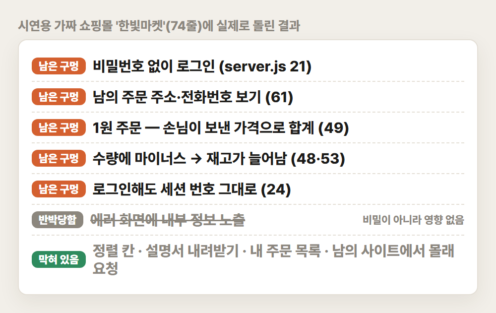
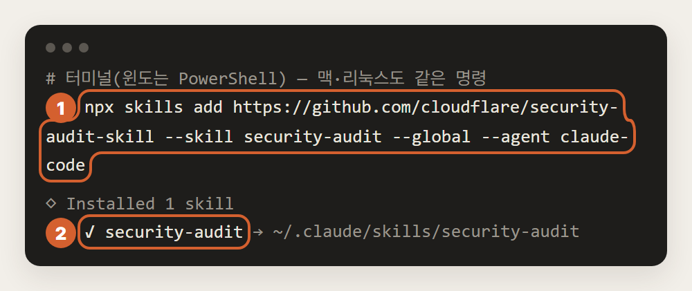
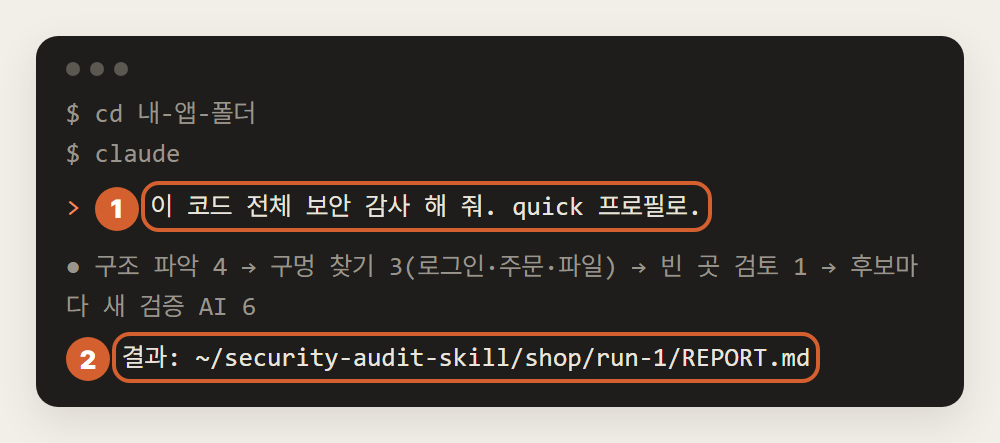
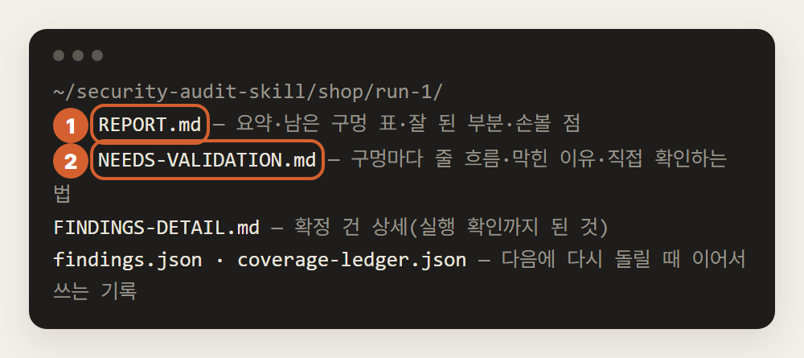
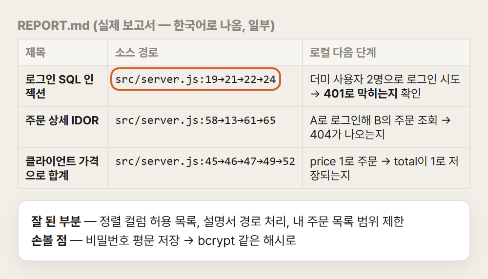

클라우드플레어가 공개한 Claude Code 보안 감사 스킬이에요. '이 코드 전체 보안 감사 해 줘' 한 줄이면, 구멍 찾는 AI 여럿이 나눠서 뒤지고, 찾은 후보마다 처음 보는 AI가 '이건 왜 구멍이 아닌지' 반박해요. 반박을 버틴 것만 남기고, 구멍마다 몇 번째 줄인지와 직접 확인하는 법을 보고서로 줘요. 무료 오픈소스(MIT)예요.

터미널(윈도는 PowerShell)에 1번 명령을 넣어요. 맥·리눅스도 같아요. '✓ security-audit'가 뜨면(2) 끝이에요. 그다음 클로드 코드를 새로 켜요.

앱 폴더로 가서 claude를 켜고 1번처럼 말해요. '전체'나 '감사'라고 해야 6단계를 끝까지 돌아요 — '보안 괜찮아?'처럼 물으면 안내만 해 줘요. 처음엔 'quick 프로필로'를 붙이면 빨라요. 이 편 실행은 74줄 앱에 약 24분, AI 14명이 일했어요.

결과는 앱 폴더 밖 ~/security-audit-skill/<폴더 이름>/run-1 에 생겨요(1·2). REPORT.md에 남은 구멍 표, 잘 된 부분, 손볼 점이 있고, NEEDS-VALIDATION.md에 구멍마다 줄 흐름과 '직접 확인하는 법'이 있어요.

로그인·주문이 있는 가짜 쇼핑몰(74줄)에 진짜 구멍 3개와, 구멍처럼 보이지만 막혀 있는 곳 2개를 넣고 돌렸어요. 진짜 구멍 3개는 다 남았고, 막혀 있는 2개는 '문제 없음'으로 닫혔어요. 후보 중 '에러 화면에 내부 정보 노출'은 반박 AI가 '비밀이 새는 게 아니라 영향이 없다'며 지웠어요.

같은 앱에 다시 돌리면 지난번 기록(coverage-ledger.json·findings.json)을 읽고, 바뀐 코드와 아직 못 본 곳부터 파요. 클라우드플레어 실험에서 한 번 돌리면 여러 번 돌려 찾은 것의 절반쯤이 나왔대요 — 두 번 이상 돌려요.
처음 한 번(윈도·맥·리눅스 같음)
npx skills add https://github.com/cloudflare/security-audit-skill --skill security-audit --global --agent claude-code
앱 올리기 전
이 코드 전체 보안 감사 해 줘
처음 써 볼 때·작은 앱
이 코드 전체 보안 감사 해 줘. quick 프로필로.
로그인·결제를 새로 붙였을 때
./src 폴더만 보안 감사 해 줘
고친 뒤·두 번째
지난번 감사 기록을 보고 이어서 다시 보안 감사 해 줘
도움이 되셨다면
@ai.antenna.kr
에서 바로 쓰는 AI 활용법을 계속 올립니다.